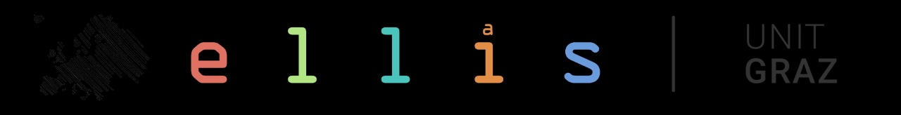
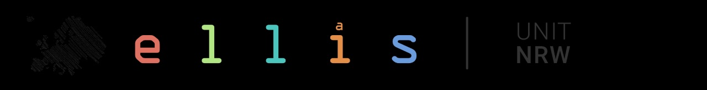

Learning dynamics and optimization
Training dynamics, implicit bias, loss landscapes, feature learning, scaling behaviour, and optimization in overparameterized models.
Foundations of Efficient Deep Learning
Towards predictive principles for efficient AI connecting deep learning theory, scaling laws, and efficiency
About
Deep learning systems continue to grow in scale and capability, but their computational, memory, data, and energy requirements increasingly limit who can train, study, and deploy them. AXIOM brings together researchers working on the mathematical foundations and practical mechanisms of efficient deep learning.
The workshop aims to connect theory and practice: from learning dynamics, optimization, approximation, and generalization to efficient architectures, compression, data efficiency, and resource-aware deployment. We seek a shared language for understanding why efficient methods work, where their limits lie, and how foundational insights can guide the design of future learning systems.
Scope
Training dynamics, implicit bias, loss landscapes, feature learning, scaling behaviour, and optimization in overparameterized models.
Expressivity, approximation theory, capacity, generalization, robustness, and the mathematical limits of efficient learning.
Sparsity, low-rank methods, pruning, quantization, distillation, conditional computation, modularity, and adaptive inference.
Hardware-aware training, energy and memory efficiency, data-efficient learning, deployment constraints, and sustainable AI.
Timeline
11:59 PM Anywhere on Earth
Notifications will be sent by email.
Final workshop material due.
NeurIPS 2026, Paris, France. Exact date to be announced.
Call for Papers
Source text required: the published Google Sites page could not be retrieved reliably while generating these files, so the submission rules, page limits, review policy, non-archival statement, dual-submission policy, and OpenReview link have deliberately not been invented or paraphrased.
Invited speakers
Speaker to be announced
Invited Vision Talk · Efficiency
Invited Vision Talk · Efficiency
Speaker to be announced
Invited Vision Talk · Theory
Invited Vision Talk · Theory
Schedule
Times shown in CET
Team

Graz University of Technology & Know-Center
ELLIS Unit Graz

École Polytechnique Fédérale de Lausanne (EPFL)
ELLIS Unit Lausanne

TU Dortmund University & Lamarr Institute
ELLIS Unit NRW

Graz University of Technology & Complexity Science Hub
ELLIS Unit Graz

Gatsby Computational Neuroscience Unit
University College London
Supported by

